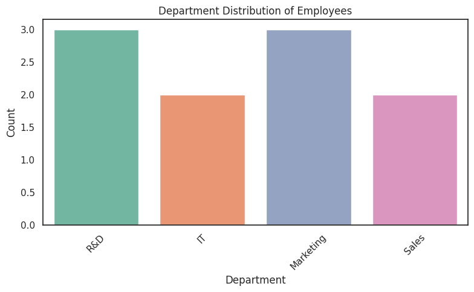

# Author: 23f2000275@ds.study.iitm.ac.in
import pandas as pd
import numpy as np
import matplotlib.pyplot as plt
import seaborn as sns
import mpld3
np.random.seed(42)
departments = ['R&D', 'IT', 'Marketing', 'Sales', 'HR', 'Finance', 'Operations']
regions = ['Middle East', 'Latin America', 'Asia Pacific', 'Africa', 'Europe', 'North America']
num_employees = 100
data = {
'employee_id': [f'EMP{str(i).zfill(3)}' for i in range(1, num_employees + 1)],
'department': np.random.choice(departments, size=num_employees, p=[0.2, 0.15, 0.2, 0.2, 0.1, 0.1, 0.05]),
'region': np.random.choice(regions, size=num_employees),
'performance_score': np.round(np.random.normal(loc=75, scale=10, size=num_employees), 2),
'years_experience': np.random.randint(1, 31, size=num_employees),
'satisfaction_rating': np.round(np.random.uniform(2.5, 5.0, size=num_employees), 1),
}
df = pd.DataFrame(data)
# Frequency count for Marketing
marketing_count = (df['department'] == 'Marketing').sum()
print(f"Frequency count for "Marketing" Department: {marketing_count}")
# Chart
plt.figure(figsize=(8, 5))
sns.countplot(data=df, x='department', palette='pastel', order=df['department'].value_counts().index)
plt.title('Employee Count by Department')
plt.xlabel('Department')
plt.ylabel('Number of Employees')
plt.xticks(rotation=45)
plt.tight_layout()
plt.show()
Frequency count for "Marketing" Department: 16